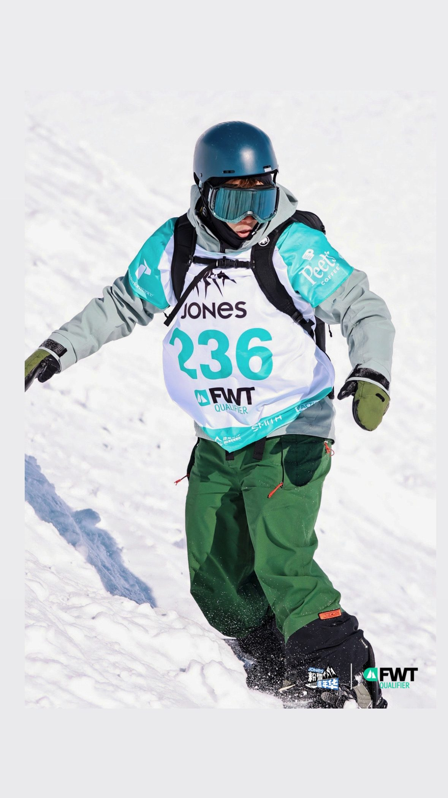
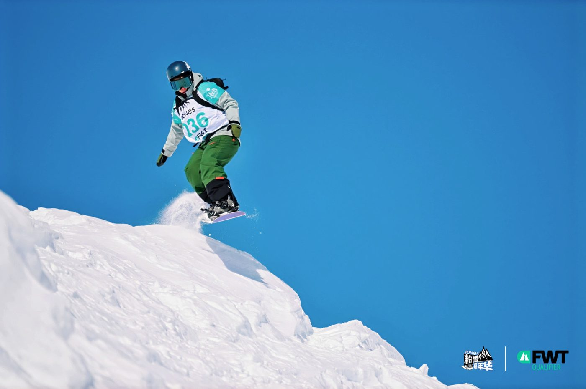

01我的故事
2025 FWT 世界野雪3星巡迴賽-禾木站
在雪國滑出一片天----陳姿憓
來自花蓮富里，靠著對滑雪的熱愛，不斷挑戰自我的極限，在2022日本安比舉辦的國際大賽freeride world qualifier(簡稱ＦＷＱ)，打敗各國好手，勇奪女子組第三名的佳績。
（freeride）顧名思義就是藉由自由滑行，跳耀能力，流暢度，滑雪技巧，展現出自我風格，而此賽事都是在戶外雪場中，滑行難度最高級的（黑線以上坡度30-48度）舉行，是一項難度很高，而充滿刺激的賽事。
而2025FWT世界野雪3星巡迴賽-禾木-勇奪女子單板組第三名
FWT賽事有分難度*1最入門
*2
*3
*4是難度最高的賽事

